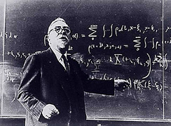
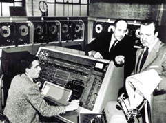

Norbert Wiener veröffentlichte "Cybernetics", ein bahnbrechendes Buch über Informationstheorie. "Cybernetics" bedeutet "die Wissenschaft der Steuerung und Kommunikation im Tier und in der Maschine". UNIVAC (UNIVersal Automatic Computer) war die erste Firma, die im großen Maßstab Computer für Unternehmen herstellte u. nicht für Kriegszwecke. Die Programmiersprache, entwickelt für "UNIVAC 1" war die erste "Interpreted Language" als auch die erste "Assembly Language".